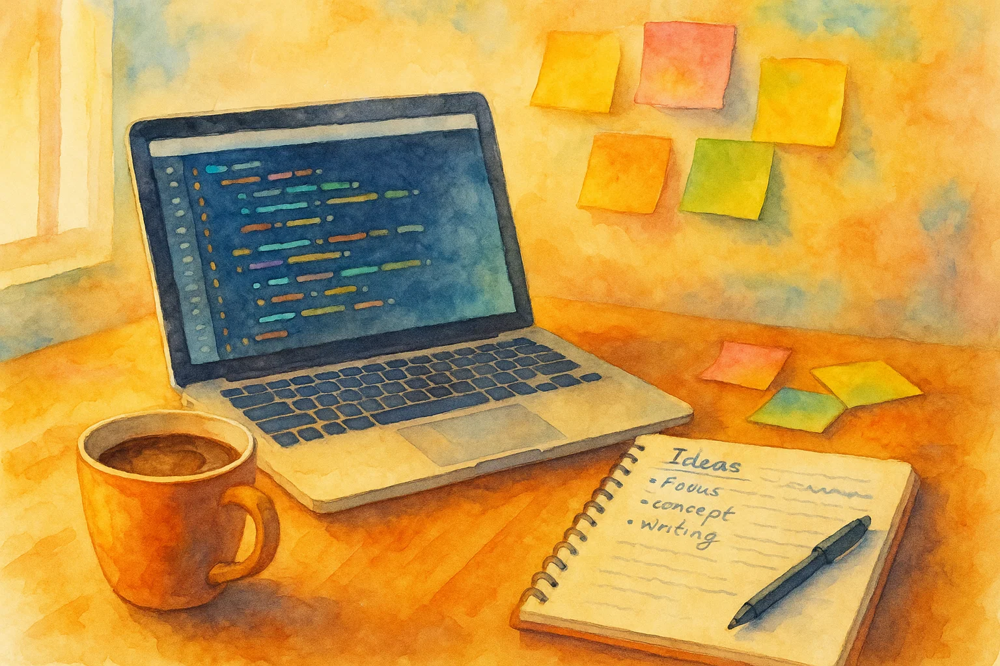

Why Building My Blog is More Fun Than Filling It
Let’s admit it, we spend more time tinkering with our blogging frameworks than actually writing posts. Building the blog is the fun part. Writing for it feels like a chore.
We love to build. It’s a playground of puzzles, a chance to learn, and a way to create something that is truly ours. But this love for building can become a distraction from the original goal of writing. And the initial joy of creating the blog can fade as our focus shifts to the content.
Don’t let perfect be the enemy of done. Even a simple post can inspire others.
I used to have a blog. I would get an idea I was excited to write about. But to show the idea required setting up a project, testing my code, writing a narrative, and then copying code, visualizations, and JavaScript into my post. I’d spend more time on the infrastructure than on the idea itself. It drained the fun out of it.
With a tool like Clay, which powers ClojureCivitas, the process is different. Technical writing becomes an extension of coding. My focus is on making the code work and explaining the idea. The narrative, written in Markdown, flows alongside the code. It’s all in one place, and it all just works.
You can use Clay to write, test, and publish your posts all in one place. No more copy-pasting code or fiddling with formatting!
It’s Still Fun, Because It’s Still Code
The best part is that this way of writing is inherently enjoyable for a developer. You’re in your favorite editor, in your REPL, you’re in your element, writing Clojure. You’re writing about code and you’re writing with code. For those of us who love to tinker, the creative outlet is still there. We can scratch that building itch without getting bogged down.
ClojureCivitas is a community space for sharing the kind of work you love to create. Contributing is easy. Just clone and open the project, write some code in a new namespace, and submit a pull request to share it. If you’re a Clojure developer with something to say, you can start writing a post right now and publish it the same day. It’s a direct, rewarding, and enjoyable way to share your insights. We can’t wait to see what you create!
Putting Our Tools Into Action
The following code is a playful simulation. Your own blogging experience may vary, but the patterns are often surprisingly familiar!
Let’s model the factors involved in blog creation with some data.
Imagine a developer who has several ideas for their blog. Some are about creating content, and others are about features and bugs they want to address.
First we will generate some example tasks.
(def vocab
{:type [:post :feature :fix]
:topic ["macros" "performance" "data science" "web dev" "testing"]
:hero ["Batman" "Wonder Woman" "Spider-Man" "Iron Man" "Captain Marvel"]
:adj ["dark" "emoji" "infinite" "custom" "live"]
:feature ["mode" "reactions" "scroll" "font" "preview"]
:bug ["off-by-one" "broken" "slow" "missing" "typo"]
:loc ["error" "layout" "load" "favicon"]})We’ll use Fastmath for seeded randomization so that our results are reproducible
(require '[fastmath.random :as r])(r/set-seed! (hash "ClojureCivitas"))#object[org.apache.commons.math3.random.JDKRandomGenerator 0xe55f1b9 "org.apache.commons.math3.random.JDKRandomGenerator@e55f1b9"]This small helper will select a word from our vocabulary
(def choose (comp #(nth % (r/irand (count %))) vocab))(choose :topic)"performance"Let’s choose words randomly to construct task descriptions
(defn task [type]
(case type
:post (str "Blog about how " (choose :hero) " uses " (choose :topic))
:feature (str "Add " (choose :adj) " " (choose :feature))
:fix (str "Fix " (choose :bug) " " (choose :loc) " in " (choose :feature))))(task (choose :type))"Blog about how Batman uses macros"Now we want to randomly generate the number of views for a blog post
(def median-views 1000)(require '[fastmath.core :as fm])(def log-normal-dist
(r/distribution :log-normal
{:scale (fm/log median-views)
:shape 0.5}))(defn views []
(int (r/sample log-normal-dist)))(views)441(repeatedly 10 views)(2172 510 444 2644 562 457 1291 639 1207 1355)Those numbers look about right, but it would be better to plot them to make sure. We’ll make use of fast dataset operations with Tablecloth, visualized with Tableplot.
(require '[tablecloth.api :as tc])(require '[scicloj.tableplot.v1.plotly :as plotly])(-> (tc/dataset {:views (repeatedly 1000 views)})
(plotly/base {:=title "The Long Tail of Blog Post Reach"
:width "100%"
:=x-title "Views per Post"
:=y-title "Number of Posts"})
(plotly/layer-histogram {:=x :views}))Most posts get a modest number of views, but a few reach a much larger audience. A classic long-tail effect of publishing online.
Now we’ll assign the views, as well as some other factors to each task.
(defn gen-task []
(let [t (choose :type)]
{:type t
:task (task t)
:time-spent (r/irand 1 24)
:readers-reached (if (= t :post) (views) 0)
:style-points (if (= t :feature) (r/irand 1 100) (r/irand 10))
:fun-factor (if (= t :fix) 0 (r/irand 1 100))}))(gen-task){:type :post,
:task "Blog about how Spider-Man uses web dev",
:time-spent 4,
:readers-reached 853,
:style-points 2,
:fun-factor 94}(tc/dataset (repeatedly 10 gen-task)
{:dataset-name "Ten things I love about blogging"})Ten things I love about blogging [10 6]:
| :type | :task | :time-spent | :readers-reached | :style-points | :fun-factor |
|---|---|---|---|---|---|
| :feature | Add dark font | 13 | 0 | 62 | 52 |
| :feature | Add live preview | 21 | 0 | 53 | 93 |
| :post | Blog about how Spider-Man uses web dev | 5 | 1344 | 2 | 47 |
| :post | Blog about how Batman uses web dev | 18 | 1160 | 0 | 16 |
| :post | Blog about how Captain Marvel uses macros | 19 | 759 | 4 | 78 |
| :feature | Add custom scroll | 14 | 0 | 70 | 80 |
| :fix | Fix typo layout in scroll | 22 | 0 | 1 | 0 |
| :fix | Fix slow layout in reactions | 6 | 0 | 1 | 0 |
| :fix | Fix typo favicon in mode | 7 | 0 | 3 | 0 |
| :post | Blog about how Batman uses macros | 22 | 2082 | 7 | 96 |
Nice! Now we’ll generate a larger dataset which may yeild more general insights.
(defonce tasks-ds
(tc/dataset (repeatedly 1000 gen-task)
{:dataset-name "Things I could do to my blog"}))This scatter plot compares the time spent on each activity type with the number of readers reached. Writing posts tends to reach more readers, while tinkering with features or fixes rarely does.
(-> tasks-ds
(plotly/base {:=title "Effort vs. Impact: What Reaches Readers?"
:width "100%"
:=x-title "Time Spent (hours)"
:=y-title "Readers Reached"})
(plotly/layer-point {:=x :time-spent
:=y :readers-reached
:=color :type}))Here, we look at how much fun each activity is, relative to the time spent. Feature work and writing posts are generally more fun than bug fixes.
(-> tasks-ds
(plotly/base {:=title "Fun per Hour: Which Tasks Spark Joy?"
:width "100%"
:=x-title "Time Spent (hours)"
:=y-title "Fun Factor"})
(plotly/layer-point {:=x :time-spent
:=y :fun-factor
:=color :type}))This chart shows how much style each activity brings to the blog. Feature work is where you can really express your creativity and add flair, while posts and fixes are less about style.
(-> tasks-ds
(plotly/base {:=title "Where the Style Shines: Creative Expression by Task"
:width "100%"
:=x-title "Time Spent (hours)"
:=y-title "Style Points"})
(plotly/layer-point {:=x :time-spent
:=y :style-points
:=color :type}))Given there are several factors at work, how can we determine the value of any one task? The objective function below quantifies what makes a blogging task worthwhile. It combines the positive factors then divides by the time spent. The higher the score, the more “bang for your buck” you get from that activity.
Try adjusting the weights or formula in the objective function to reflect what you value most in your own workflow.
(defn objective
"I want to have fun, reach readers, with style, without spending a lot of time"
[{:keys [readers-reached fun-factor style-points time-spent]}]
(/ (+ readers-reached
fun-factor
style-points)
time-spent))We combine all the factors relative to time spent, to estimate the overall value of each activity type. This bar chart summarizes which activities give you the most bang for your buck.
(-> tasks-ds
(tc/map-rows #(assoc % :value (objective %)))
(tc/group-by [:type])
(tc/mean :value)
(plotly/base {:=title "Time Well Spent: Overall Value by Activity"
:width "100%"
:=x-title "Activity Type"
:=y-title "Mean Value"})
(plotly/layer-bar {:=x :type
:=y "summary"
:=y-title "mean value"
:=color :type}))Conclusion
Building and tinkering with your blog is fun, but sharing your ideas is what truly creates value for you and your readers. With tools that make writing as natural and enjoyable as coding, you can focus on what matters. Write, share, and enjoy the process. Your next post might be the one that inspires someone else to start.

Ready to share your own story? Open a new namespace and start writing today!